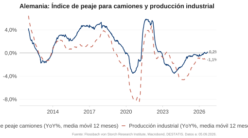
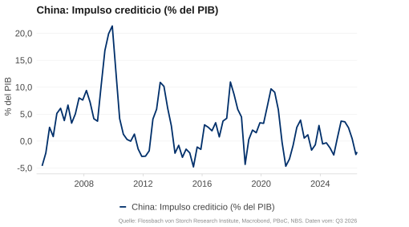
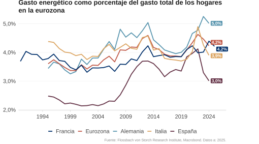
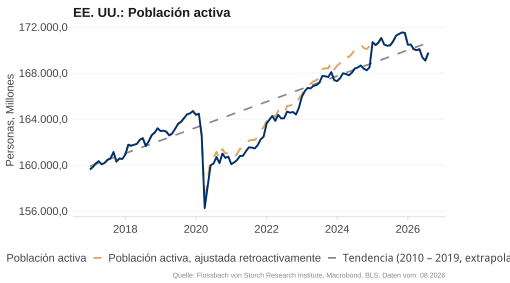
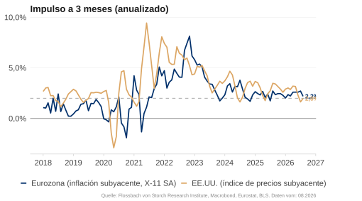
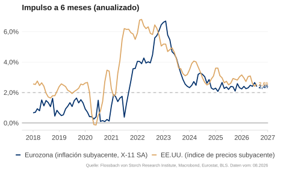

Informe de Coyuntura

Panorama macroeconómico en breve
Global: Del choque del petróleo al choque de los tipos de interés
El encarecimiento de la energía ha impulsado la inflación y ha lastrado el crecimiento.
Con las subidas de tipos, es probable que unas condiciones de financiación más estrictas se conviertan en un freno para el crecimiento.
EE. UU.: Consumo robusto pero cauteloso
El mercado laboral es sorprendentemente fuerte y el consumo se mantiene sólido. Si la inflación se mantiene persistente, las subidas de tipos podrían debilitar el consumo y frenar el crecimiento.
Eurozona: Problemas estructurales se topan con el freno de los tipos
Las subidas de los tipos de interés oficiales ya descontadas coinciden con una economía ya debilitada. Los criterios de concesión de préstamos restrictivos y los elevados costes de la energía refuerzan las debilidades estructurales existentes.
China: La política apoya una economía doméstica débil
Las políticas monetaria y fiscal expansivas estabilizan la economía, mientras que el mercado inmobiliario y la demanda interna siguen débiles. La dinámica de las exportaciones continúa, pero los riesgos geopolíticos hacen que el crecimiento sea vulnerable.
¿Freno al crecimiento: tipos de interés?

ECONOMÍA REAL
Crecimiento

EE. UU. y Eurozona: Choque de los precios del petróleo

En mayo, la situación empresarial en EE. UU. se mantuvo positiva, mientras que se ensombreció aún más en la eurozona. El Índice de Gerentes de Compras (PMI) mide la situación empresarial actual y las expectativas a corto plazo de las empresas. Se sitúa por encima de 50 si más empresas informan de una mejora que de un deterioro. En la eurozona, el PMI cayó hasta 48,5, debido sobre todo a la fuerte caída del PMI del sector servicios. En EE. UU., bajó ligeramente hasta 51,5. En China, el PMI oficial del NBS se situó en 50,5, mientras que el PMI privado de RatingDog subió hasta 54 y se mantuvo volátil.
Eurozona: Debilidad del sector servicios


El sector servicios en la eurozona continuó debilitándose, mientras que la situación empresarial en la industria descendió ligeramente pero se mantuvo en zona expansiva. El PMI de servicios cayó al 47,7 en mayo, lastrado por el fuerte aumento de los precios de la energía y las perturbaciones en los viajes. El PMI de manufacturas bajó ligeramente al 51,6. En EE. UU., el sector servicios se mantuvo estable con un PMI del 50,7, mientras que la industria continuó expandiéndose con un 55,1.
Alemania y Francia con perspectivas sombrías


En Alemania y Francia, la situación empresarial se ha ensombrecido aún más. El PMI de servicios en mayo fue del 48,8 en Alemania y del 44,3 en Francia. Los PMI de manufacturas también descendieron. El hecho de que vuelvan a subir en el próximo mes probablemente seguirá dependiendo de la evolución de los precios de la energía.
La producción industrial alemana sigue contrayéndose

El índice de kilometraje de peaje de camiones, que mide el kilometraje de los camiones sujetos a peaje en las autopistas y se considera un indicador adelantado de la producción industrial, se ha recuperado notablemente tras la larga fase de debilidad desde 2024, pero no muestra crecimiento en el promedio anual. La producción industrial sigue esta evolución y desciende con menos fuerza que en 2025. Sin embargo, es probable que la ligera recuperación ya haya terminado. Actualmente no se vislumbra un crecimiento de la producción industrial.
China: Economía doméstica débil

Los índices de gerentes de compras de mayo de 2026 dibujan un panorama mixto. El PMI oficial del NBS, que recoge principalmente a las empresas más grandes y orientadas al mercado nacional, se situó en 50,0 en la industria y en 50,3 en el sector servicios. Por el contrario, el PMI privado de RatingDog, más orientado a la exportación, se mantuvo más alto y volátil en 51,8 (industria) y 54,4 (servicios). La divergencia sigue reflejando la debilidad del mercado nacional frente a la economía exportadora.
La actividad de construcción no se recupera

El número de viviendas nuevas iniciadas volvió a caer en marzo y se sitúa por debajo del nivel de 2010 desde 2022. Esto también se refleja en el número de inmuebles inacabados y terminados, que también descendieron con fuerza.
Condiciones de Financiación

Bancos de EE. UU.: Préstamos restrictivos a empresas


La encuesta SLOOS de abril de 2026 muestra que más bancos endurecieron sus estándares de crédito para las empresas que los que los flexibilizaron (valor ligeramente positivo). La mayoría de los bancos encuestados informaron de una mayor demanda de crédito en los últimos tres meses (valor positivo).
Condiciones crediticias restrictivas en la eurozona


Según la Encuesta sobre Préstamos Bancarios (BLS) del BCE para el segundo trimestre de 2026, se espera que las condiciones de crédito se vuelvan más restrictivas tanto para las empresas como para los hogares en los próximos tres meses (valor positivo). Se espera que la demanda neta de crédito disminuya tanto para la vivienda residencial como para fines de consumo, según los encuestados.
Impulso crediticio débil


El impulso crediticio (la variación del flujo de crédito al sector privado en puntos porcentuales del PIB) es un buen indicador adelantado de la demanda privada. Recientemente fue ligeramente positivo tanto en EE. UU. como en la eurozona, pero perdió impulso. Dado que, especialmente en la eurozona, el número de bancos con un aumento de la concesión y la demanda de préstamos está disminuyendo significativamente, esto apunta a un pronto impulso crediticio negativo.
Debilitamiento del impulso crediticio en China

El impulso crediticio en China fue ligeramente positivo a principios de año y volvió a caer en terreno negativo en el primer trimestre de 2026. Esto sigue apuntando a una débil demanda privada.
Consumo privado

EE. UU.: Las ventas minoristas siguen aumentando

Las ventas minoristas oficiales subieron un 5,2 % interanual en abril, algo más que en los meses anteriores. El índice semanal “Johnson Redbook Retail Sales”, que recoge las ventas de grandes almacenes y tiendas minoristas, subería con fuerza y muestra unas sólidas ventas minoristas en EE. UU. hasta mediados de mayo.
EE. UU.: La deuda de tarjetas de crédito sube algo más rápido

La deuda de las tarjetas de crédito creció tan rápido en las últimas semanas como en años anteriores. La variación mensual se situó recientemente dentro del patrón estacional habitual de años anteriores.
EE. UU.: Las búsquedas en Google apuntan a un consumo cauteloso


A menudo, el consumo comienza con una búsqueda en internet. Por ello, los datos de búsqueda online son un buen indicador adelantado del consumo privado. La intensidad de búsqueda del término “restaurante” ha estado ligeramente por debajo de la media de los últimos cinco años en las últimas semanas, tras haber sido superior anteriormente. Los términos de la categoría “viajes” se buscan menos que la media de los últimos cinco años desde hace dos semanas.
EE. UU.: La tasa de ahorro sigue bajando

La tasa de ahorro de los hogares estadounidenses ha promediado un 5,2 % desde el año 2000. En las crisis, suele tender a subir. En abril, la tasa de ahorro bajó hasta el 2,6 % y se mantuvo por debajo de la media histórica. La incertidumbre sobre la duración de la guerra en Irán y el impacto en los precios de la energía podrían motivar a los hogares a ahorrar más de nuevo.
Solo el sentimiento republicano sigue siendo optimista


La confianza de los consumidores estadounidenses se mantiene pesimista en promedio. El Índice de Confianza del Consumidor del Conference Board se encuentra al nivel de la crisis del coronavirus. El Índice de Sentimiento del Consumidor de la Universidad de Michigan alcanzó valores que de otro modo solo se dan en recesiones. Como es habitual, los partidarios del partido de la oposición son más pesimistas. Los republicanos, por el contrario, se mantienen optimistas.
Gasto energético: EE. UU. más bajo que la eurozona

Históricamente, la carga energética de los hogares era mayor en EE. UU. que en Europa. Sin embargo, esta relación se ha invertido con la crisis del coronavirus y la guerra de Ucrania. A finales de 2024, la proporción del gasto en energía sobre el gasto total de los hogares era mayor en Alemania y Francia que en EE. UU. El actual choque de los precios del petróleo probablemente reforzará esta tendencia.
Eurozona: Carga energética de los hogares alemanes

La carga energética de los hogares alemanes se sitúa por encima de la media de la eurozona desde mediados de la década de 2000. Con el estallido de la guerra en Ucrania subió significativamente, mientras que bajó de nuevo especialmente en España e Italia. En Alemania, por el contrario, la proporción del gasto en energía sobre el gasto total de los hogares se mantuvo en torno al 5 %.
Eurozona y Alemania: La tasa de ahorro de los hogares se mantiene estable

La tasa de ahorro en Alemania se mantiene estable en el 10 %, significativamente más alta que en EE. UU. (2,6 %). Históricamente, la tasa de ahorro alemana también ha sido más alta que en la eurozona. Durante la crisis del coronavirus, subió a casi el 20 %.
Búsquedas en Google apuntan a la cautela en Francia y Alemania


Las búsquedas en Google de “restaurante” en Alemania y Francia apuntan a una débil demanda privada. En ambos países, la intensidad de búsqueda en las últimas semanas fue inferior a la media de los últimos cinco años para la misma época del año.
Menos cautela en España


Mientras que la intensidad de búsqueda de “restaurante” en España se mantuvo tan alta como la media de los últimos años, fue algo menor en Italia.
El sentimiento mejora solo ligeramente

En China, el clima de consumo ha mejorado ligeramente desde principios de 2025, pero se mantiene históricamente bajo. También el sentimiento en el sector inmobiliario está deprimido. El “National Real Estate Climate Index” sigue una tendencia bajista desde hace tres años.
Mercado Laboral

EE. UU.: Continuo fuerte aumento de los salarios nominales

En mayo, el promedio de los salarios por hora en EE. UU. subió un 3,4 % interanual, de nuevo algo más lento que el mes anterior. En el primer trimestre de 2026, el crecimiento salarial fue del 3,9 % en Alemania y de solo el 1,6 % en Francia. En Alemania y en EE. UU., el crecimiento salarial se mantiene por encima de la media de 2011-2019.
EE. UU.: ¿Normalización del crecimiento salarial?

El crecimiento salarial según el Wage Tracker de Indeed Hiring Lab parece adelantarse unos siete meses al crecimiento del salario medio en EE. UU. Si esto es correcto, el crecimiento salarial podría seguir normalizándose.
EE. UU.: Débil crecimiento salarial en los salarios bajos

En abril, los salarios por hora en EE. UU. subieron un promedio del 3,8 %. Los incrementos salariales de los distintos grupos salariales están convergiendo. En el cuartil salarial más bajo, los salarios subieron un 3,6 %, en el cuartil más alto un 3,7 %. Con ello, los salarios más altos ya no crecen mucho más rápido que en el punto álgido de 2022 y suben solo ligeramente más rápido que los más bajos.
El mercado laboral de EE. UU. está menos tensionado

La curva de Beveridge representa la relación entre la tasa de vacantes (los puestos vacantes como proporción de la suma de puestos ocupados y vacantes) y la tasa de desempleo. Con la crisis del coronavirus, la curva se desplazó hacia fuera porque, debido a las medidas políticas, el desempleo se mantuvo alto a pesar de que había muchos puestos libres. Las rigideces se han vuelto a reducir y la curva de Beveridge ha vuelto al nivel anterior a la crisis del coronavirus. Por lo tanto, la situación en el mercado laboral estadounidense se ha normalizado.
El crecimiento del empleo se recupera pero sigue siendo débil

En mayo, el número de puestos de trabajo en el sector privado no agrícola subió un 0,5 % respecto al año anterior según el informe de ADP, algo más que el mes anterior. Las cifras oficiales también arrojaron un crecimiento anual del 0,5 %. El mercado laboral estadounidense se mantiene estable, pero el crecimiento del empleo es ahora más lento que en los años transcurridos entre la crisis financiera y la del coronavirus.
EE. UU.: Despidos y solicitudes de subsidio por desempleo dentro de lo normal


En mayo se anunciaron unos 97.000 recortes de empleo, algo más que el mes anterior. Al mismo tiempo, las solicitudes iniciales semanales de subsidio por desempleo subieron ligeramente hasta las 225.000 recientemente, pero se mantuvieron en el extremo inferior de las fluctuaciones de los últimos tres años y en un nivel históricamente bajo. Entre 1990 y 2019, el promedio semanal fue de unas 350.000.
EE. UU.: Oferta de trabajo a la baja

La oferta de trabajo en EE. UU. se ha estancado desde el otoño de 2024. Un ajuste metodológico aumentó la población activa en 2,1 millones de personas en enero de 2025. Una nueva serie calculada retroactivamente (amarilla) pone de manifiesto que el crecimiento ya se detuvo en el otoño de 2024. Con la política migratoria más restrictiva de Donald Trump, es probable que la oferta de trabajo siga estancada o incluso disminuya.
Los salarios nominales suben más rápido en Alemania
El Wage Tracker de Indeed Hiring Lab muestra que los salarios nominales siguen subiendo. En abril, la tasa de variación fue del 2,3 % en la eurozona, del 3,2 % en Alemania, del 1,1 % en Francia y del 2,3 % en EE. UU. Solo en Alemania los salarios suben más rápido que el año anterior.
Eurozona: Mercado laboral tensionado

La curva de Beveridge, que muestra la relación entre la tasa de vacantes y la tasa de desempleo, apunta a un mercado laboral tensionado. Durante la crisis del coronavirus, la curva se desplazó hacia fuera ya que las medidas políticas hicieron que el desempleo se mantuviera alto a pesar de que había muchos puestos vacantes. Mientras tanto, estas rigideces se han suavizado en gran medida y el desempleo se encuentra en un nivel históricamente bajo. La tasa de vacantes ha disminuido, pero vuelve a corresponder a la relación habitual entre ambas variables.
China: Muy alto desempleo juvenil

La tasa de desempleo de China se movió lateralmente en el 5 % en los últimos meses. El desempleo juvenil, definido como la tasa de desempleo entre los jóvenes de 16 a 24 años, alcanzó el 21,3 % a mediados de 2023. Tras una pausa en la publicación de seis meses, existe una nueva estadística “sin estudiantes”. Esta se situó en el 16,9 % en febrero.
PRECIOS
Materias Primas

Altos costes de flete marítimo para el crudo

Los fletes de los petroleros de crudo han subido a nuevos niveles récord como consecuencia del bloqueo del estrecho de Ormuz. Aunque han disminuido recientemente, siguen estando por encima del nivel máximo de 2022 tras el inicio de la guerra de Ucrania. El World Container Index (WCI), que refleja los fletes en el comercio de mercancías, se mantiene por el contrario en un nivel bajo debido al persistente exceso de capacidad en la construcción de portacontenedores.
Backwardation: Se esperan bajadas en los precios del petróleo


El mercado cuenta con una bajada de los precios del petróleo. Las entregas a tres meses o a un año son más baratas que en el mes actual (mes más próximo). Esta “backwardation” indica que la escasez actual se considera temporal. Los precios de los futuros con entrega a un año han vuelto a subir con fuerza en los últimos días, más que tras el inicio de la guerra en Ucrania en 2022.
¿Cuándo se normalizará el tráfico marítimo por el estrecho de Ormuz?

La reapertura del estrecho de Ormuz es crucial para la oferta de petróleo y, por tanto, para los precios del mismo. A finales de mayo, los mercados de predicción todavía daban una probabilidad del 65 % a una reapertura para finales de junio. El 8 de junio, sin embargo, era de solo el 10 %. Para finales de julio, la probabilidad implícita es del 28 %, y para finales de diciembre, del 74 %.
Los precios del gas en Europa siguen una evolución similar a la de 2022

Europa sigue dependiendo fuertemente de las importaciones de petróleo y gas. Tras un rápido aumento de alrededor del 75 %, los futuros del gas natural holandés TTF a un mes han descendido algo recientemente, pero siguen estando un 50 % por encima del nivel de una semana antes del inicio de la guerra de Irán. En la crisis energética de 2022, los precios del gas en Europa llegaron a triplicarse en algunos momentos.
EE. UU.

EE. UU.: La tasa de inflación sube con fuerza


En mayo, los precios al consumo siguieron subiendo en EE. UU. El Índice de Precios al Consumo (IPC) aumentó un 4,2 % interanual, tal como se esperaba. La inflación subyacente se situó en el 2,9 %, igual a las expectativas medianas de los participantes en una encuesta mensual de Bloomberg. El fuerte aumento se debe sobre todo al choque del petróleo.
Inflación en EE. UU.: IPC, PCE y deflactor del PIB

La inflación se determina a través de diferentes índices. El IPC recoge los precios al consumo, el índice PCE los gastos de los hogares y el deflactor del PIB los precios de todos los bienes económicos producidos en el país. Las tasas de variación de los tres índices alcanzaron un máximo a mediados de 2022. En abril de 2026, la tasa de inflación del índice PCE subyacente (sin energía ni alimentos), preferido por la Fed, se situó en el 3,3 %.
Motores de la inflación: Servicios y energía

El encarecimiento de los servicios sigue siendo el motor dominante de la inflación estadounidense. Mientras que la contribución de los precios de los alimentos sigue siendo moderadamente positiva, el último choque de los precios del petróleo está teniendo ahora un impacto total: la contribución de los precios de la energía a la inflación es la más alta desde 2022 y vuelve a impulsar la tasa general de forma notable.
EE. UU.: Creciente presión inflacionista

En mayo, los precios de los servicios subieron un 3,5 % interanual. Los precios de los alimentos siguieron subiendo con fuerza, con una tasa de variación anual del 2,7 %. Los precios de la energía subieron con especial fuerza: con un incremento del 23 % interanual, fueron tan altos como la última vez en 2022.
EE. UU.: La inflación Supercore vuelve a subir

La Supercore se define como el índice de precios de los servicios sin energía ni costes de vivienda. Sobre la base del índice IPC, la tasa anual de la inflación Supercore fue del 3,7 % en mayo. Medida por el índice PCE, la inflación Supercore subió a casi el 3,6 % en abril. Esto demuestra que la presión inflacionista en el sector servicios sigue siendo alta incluso sin los costes de la vivienda.
El crecimiento del precio de los alquileres sigue bajando

Los costes de alquiler representan una gran parte de los precios de los servicios en el IPC y también están fuertemente correlacionados con los costes de la vivienda en propiedad. Durante los años del coronavirus, el índice de alquileres de Zillow para nuevos alquileres fue un buen indicador adelantado de la evolución de los alquileres, porque los alquileres existentes reaccionan con mayor lentitud. Actualmente, con cerca de un 1,7 %, el índice de alquileres de Zillow señala un crecimiento de los alquileres más lento que el índice de alquileres del IPC, que se sitúa en torno al 2,9 %.
EE. UU.: La inflación podría seguir subiendo

El índice de precios del PMI de servicios del ISM se adelanta unos seis meses a la inflación de los precios al consumo. Si se confirma esta relación, es probable que la inflación siga subiendo en los próximos meses.
Eurozone

Creciente inflación en la eurozona


En mayo, el IPCA de la eurozona subió un 3,2 % interanual, y la inflación subyacente (sin energía ni alimentos) se situó en el 2,5 %. En Alemania (2,7 %), Francia (2,8 %), Italia (3,3 %) y España (3,6 %), la inflación en mayo volvió a situarse claramente por encima del objetivo del 2 %.
Encarecimiento de los servicios y la energía

Hasta finales de 2022, los precios de la energía y los alimentos fueron los que más contribuyeron a la inflación. Actualmente, el encarecimiento se debe principalmente a la subida de los precios de los servicios y, en menor medida, a los alimentos y de nuevo a la energía. Entretanto, los precios de la energía tuvieron un efecto moderador sobre la inflación durante varios meses.
La presión inflacionista persiste


Las tasas de inflación subyacente anualizadas a 3 y 6 meses muestran la presión inflacionista a corto plazo. En mayo, tanto la tasa a 3 meses como la de 6 meses en la eurozona fueron del 2,4 %. En EE. UU., la tasa a 3 meses fue del 3,2 % y la tasa a 6 meses del 2,9 %.
Expectativas de inflación

Volátiles expectativas de inflación de los consumidores


En mayo de 2026, las expectativas de inflación de los consumidores estadounidenses para los próximos doce meses fueron del 4,8 % (Universidad de Michigan) y del 3,6 % (Fed de Nueva York). En la eurozona, los hogares esperaban en febrero una mediana del 4 % para el próximo año y del 2,9 % para los próximos tres años, según el BCE.
La energía vuelve a encarecerse…


Los precios de los alimentos y la energía se excluyen para analizar la evolución de la inflación subyacente. Sin embargo, para la percepción del poder adquisitivo y el comportamiento electoral, son precisamente estos precios los decisivos. Tras el fuerte aumento de 2021, los precios de la energía se han estabilizado, pero los precios de los alimentos siguen subiendo. La guerra en Irán ha vuelto a impulsar los costes energéticos: en EE. UU. están un 24 % por encima del nivel de la elección de Trump (noviembre de 2024), y en la eurozona un 9 %.
… lo que probablemente perjudicará a los republicanos de EE. UU.

En noviembre de 2026 se renovará la totalidad de la Cámara de Representantes y 35 de los 100 escaños del Senado. En los mercados de predicción, una mayoría republicana en la Cámara de Representantes solo se descuenta actualmente con un 19 %. Para el Senado, la probabilidad ha vuelto a subir recientemente y se sitúa actualmente en torno al 56 %.
China: Temores de deflación

La tasa de inflación china se ha situado por debajo del 1 % desde mediados de 2023. En abril fue del 1,2 %, y la inflación subyacente (sin alimentos ni energía) se situó en el 1,1 %. Esto subraya la débil dinámica económica del país. Los altos precios del petróleo y la energía probablemente aumentarán la tasa de inflación, al menos temporalmente.
EXPECTATIVAS DE TIPOS
E IMPULSO FISCAL
USA: Tipo de interés real a la baja

El tipo de interés real es la diferencia entre el tipo de interés nominal y la inflación (esperada). Mientras que el tipo de interés nominal se puede leer en el mercado, para la inflación esperada se debe recurrir a una estimación. Dependiendo del enfoque elegido, el tipo de interés real para la economía estadounidense se sitúa actualmente entre el -1,0 % y el 0,3 %. Alternativamente, se puede leer en el mercado el rendimiento de los bonos del Estado indexados a la inflación (TIPS en EE. UU.). Para un plazo de dos años, el tipo de interés real es positivo desde abril de 2022 y recientemente subió hasta el 1,1 %.
Volátiles expectativas de tipos de interés


En los mercados de futuros se descuenta una subida de tipos de un máximo de 25 puntos básicos por parte de la Fed hasta diciembre de 2026. En la eurozona, se descuentan subidas de tipos de unos 50 puntos básicos. No obstante, el nivel de tipos esperado para finales de año en Europa sigue estando muy por debajo del de EE. UU.
China: Política monetaria expansiva

El banco central chino gestiona su política monetaria principalmente a través de tres instrumentos: el tipo repo inverso a 7 días, el tipo de interés preferencial de los préstamos (LPR) a un año de los bancos comerciales y el coeficiente de reservas obligatorias (RRR). En los últimos años, ha bajado los tres tipos en varias ocasiones para proporcionar más liquidez y apoyar así la coyuntura mediante la expansión del crédito. Para 2026, señala una política monetaria que seguirá siendo moderadamente laxa.
Impulsos fiscales moderados para 2026

Las estimaciones más recientes del FMI han cambiado especialmente el panorama para China en el año 2026. En lugar de un impulso fiscal neutral esperado anteriormente, se pronostica ahora un fuerte impulso positivo, respaldado por amplias medidas estatales para apoyar la demanda interna. En EE. UU., el impulso fiscal siguió siendo negativo en 2024 y 2025, pero para 2026 se espera una ligera relajación. En la eurozona, el impulso fiscal se desplaza de 2025 a 2026, ya que el programa alemán de armamento e infraestructuras, en particular, solo surtirá efecto con retraso.
Previsión económica 2026
| Mom. | Fisc. | Financ. | FvS-RI | Consenso Bloomberg | |
|---|---|---|---|---|---|
| EE. UU. | 0 | + | 0 | 2,0 % | 2,1 % |
| CN | 0 | + | 0 | 4,6 % | 4,6 % |
| EA | - | + | 0 | 0,6 % | 0,8 % |
| DE | - | + | 0 | 0,4 % | 0,6 % |
Nuestra previsión de crecimiento para 2026 se basa en una evaluación cualitativa del impulso económico, el efecto de crecimiento de la política fiscal y las condiciones de financiación, incluida la política monetaria. Estas previsiones deben entenderse como valores de orientación y no como previsiones puntuales precisas.
EE. UU.: El consumo estable, una sólida situación del mercado laboral y unos salarios que suben con menos fuerza justifican el momento positivo sin cambios. En cuanto a la política fiscal, no se prevé una consolidación presupuestaria. Al contrario, el rumbo sigue siendo expansivo.
En cuanto a la política monetaria, no se esperan más bajadas de tipos hasta finales de año. La guerra en Irán aumenta la incertidumbre y el riesgo de recesión.
China: La continua debilidad del sector inmobiliario lastra la demanda interna. La industria estabiliza la coyuntura a través de las exportaciones, aunque especialmente a través de subvenciones, lo que apunta a un exceso de capacidad y tiene un efecto deflacionista. Se esperan ligeros impulsos de la política fiscal y monetaria.
Eurozone / Alemania: El momento negativo en Alemania y la eurozona como consecuencia del impacto del choque de los precios del petróleo en la demanda y la industria se ve compensado en parte a nivel europeo por el crecimiento más dinámico de España e Italia. Sin embargo, España se debilita cada vez más. Los programas económicos financiados con deuda deberían dar un impulso en 2026. Sin embargo, sin desregulación, las inversiones alemanas en infraestructuras y armamento probablemente tengan poco efecto. La subida de los precios del petróleo y del gas, así como la debilidad del euro, lastran adicionalmente la coyuntura. Ante las malas perspectivas empresariales y el aumento de la incertidumbre, hemos vuelto a rebajar nuestra previsión.
Avisos legales
La información contenida y las opiniones expresadas en este documento reflejan las valoraciones del autor en el momento de la publicación y pueden cambiar en cualquier momento sin previo aviso. La información sobre declaraciones prospectivas refleja la visión y las expectativas de futuro del autor. Las opiniones y expectativas pueden diferir de las valoraciones presentadas en otros documentos de Flossbach von Storch SE. Las contribuciones se facilitan únicamente con fines informativos y sin compromiso contractual o de otro tipo. La información y las valoraciones contenidas no constituyen asesoramiento de inversión ni ningún otro tipo de recomendación. Se excluye cualquier responsabilidad por la integridad, actualidad y exactitud de la información y las valoraciones facilitadas. La evolución histórica no es un indicador fiable de la evolución futura.
Todos los derechos de autor y demás derechos, títulos y reclamaciones sobre, para y de toda la información de esta publicación están sujetos sin restricciones a las disposiciones aplicables en cada caso y a los derechos de propiedad de los respectivos propietarios registrados. Usted no adquiere ningún derecho sobre el contenido. El derecho de autor de los contenidos publicados y creados por la propia Flossbach von Storch SE pertenece exclusivamente a Flossbach von Storch SE. No se permite la reproducción o el uso de tales contenidos, en su totalidad o en parte, sin el consentimiento por escrito de Flossbach von Storch SE. Las reimpresiones de esta publicación, así como su puesta a disposición del público, requieren el consentimiento previo por escrito de Flossbach von Storch SE. © 2026 Flossbach von Storch. Todos los derechos reservados.